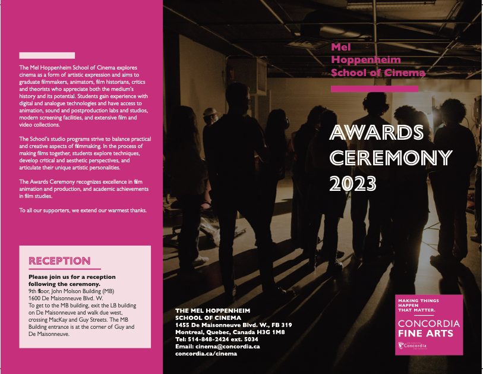

Cinema Awards Ceremony Booklet
Designing Within Fine Arts Brand Standards
Project Brief
Design a multi-page ceremony booklet for the Mel Hoppenheim School of Cinema's annual Awards Ceremony, celebrating student achievement across film animation, film production, and film studies. The challenge: honor dozens of recipients with clarity and elegance while maintaining strict adherence to the Faculty of Fine Arts Graphic Standards Manual—ensuring every design choice aligns with the visual identity system governing all Fine Arts communications.
Step 1: Understanding the Fine Arts System
The Mel Hoppenheim School of Cinema is housed within Concordia's Faculty of Fine Arts, which means all visual materials must comply with the Fine Arts Graphic Standards Manual—a comprehensive brand system defining color palettes, typography, layout principles, and identifier usage.
Before beginning design exploration, I studied the manual to understand the non-negotiable rules: where the identifier box must appear, which colors from the nine-color palette were appropriate, how typography should be structured, and how photography integrates with branded elements. This ceremony booklet would be a public-facing document distributed to students, faculty, donors, and guests—brand compliance wasn't optional.

The Faculty of Fine Arts Graphic Standards Manual (March 2018, v8) — the authoritative reference for all Cinema school design work
Step 2: Identifier Box Requirements
Page 7 of the manual specifies exact rules for the identifier box—the branded container featuring "CONCORDIA FINE ARTS," the tagline "Making things happen that matter," and the university logo. The identifier must appear on all layouts, with specific sizing requirements:
• Minimum size: 1/5 width of layout
• Ideal size: 1/4 width of layout
• Maximum size: 1/2 of layout
• Default position: Bottom left corner (though other corners permitted)
• Slogan: Always appears on advertisements and ceremonial materials
For the booklet cover, I positioned the identifier prominently to establish immediate Fine Arts brand recognition, ensuring the Cinema school's event was visually linked to the broader institutional identity.

Page 7: Identifier Box Rules — defining mandatory placement, sizing, and slogan usage for all Fine Arts materials
Step 3: Color Palette Strategy
The Fine Arts manual provides nine vibrant colors (page 8), each with precise Pantone, CMYK, and RGB specifications. For this awards ceremony—a celebration requiring energy, creativity, and sophistication—I selected Magenta (Pantone 219) as the primary accent color.
Magenta embodies the Fine Arts' bold, creative spirit. It's attention-commanding without being aggressive, celebratory without feeling frivolous, and creates excellent contrast with black-and-white photography. This color choice signals that the Cinema school belongs to the Fine Arts family while giving the booklet distinctive visual identity.
The palette also included:
Black & White — Provides sophistication and ensures maximum readability for dense text content (award names, recipient lists, scholarship details)
Magenta accents — Used strategically for section dividers, callout boxes (like "RECEPTION"), and the identifier box to create visual rhythm
Step 4: Layout Precedents & Photography Integration
Page 14 of the manual demonstrates poster layouts with full-bleed photography—showing how to balance imagery with branded elements. These examples taught critical principles:
• Positioning the identifier box when photography extends to edges
• Creating sufficient contrast between images and text for readability
• Using white text boxes to ensure legibility over complex backgrounds
• Maintaining visual hierarchy when combining photography, typography, and brand elements
For the booklet cover, I selected atmospheric photography of cinema students in production spaces—capturing the creative energy of the school. The image bleeds to edges, with the identifier box anchoring the composition and oversized outline typography ("AWARDS CEREMONY 2023") creating drama against the moody backdrop.

Page 14: Poster layout principles showing full-bleed image treatment, identifier placement, and text hierarchy strategies
Step 5: Identifier Variations for Interior Pages
Page 10 shows identifier box variations—with and without the Concordia logo—offering layout flexibility. For interior booklet pages, which prioritize information density over branding, I referenced these variations to determine when the full identifier was necessary versus when simplified Fine Arts branding sufficed.
The cover features the complete identifier (slogan + wordmark + logo) for maximum brand impact. Interior spreads use streamlined Fine Arts typography without the full box, allowing more space for award listings while maintaining brand consistency through color (magenta accents) and typography (Gill Sans MT Pro family).

Page 10: Identifier Box variations showing when full branding is required versus simplified applications for content-heavy layouts
Design Solution: The Cover
The cover synthesizes Fine Arts brand standards with Cinema school identity:
Photography: Full-bleed image of students in cinema production space creates immediate emotional connection and celebrates the creative community
Typography: Oversized outline type reading "AWARDS CEREMONY 2023" provides drama and hierarchy, rendered in Gill Sans Nova Inline (the Fine Arts display typeface)
Identifier Box: Positioned in magenta (Pantone 219) with white text, featuring the mandatory "Making things happen that matter" tagline
School Wordmark: "Mel Hoppenheim School of Cinema" appears prominently in white, ensuring departmental recognition
The magenta identifier box creates a vibrant anchor point against the dark photography, ensuring the booklet feels celebratory while maintaining the sophisticated tone appropriate for academic ceremony.
Interior Pages: Information Architecture
The interior spreads balance extensive content with Fine Arts visual principles:
Typography System: Using the Gill Sans MT Pro family (manual-specified), I created clear hierarchy: Bold headings for award categories, Medium subheads for scholarship names, Regular body text for recipient lists
Color as Wayfinding: Magenta section dividers and callout boxes (like "RECEPTION") help attendees navigate quickly during the ceremony
Whitespace Strategy: Generous margins and line spacing prevent the booklet from feeling dense despite dozens of awards and hundreds of names
Consistent Formatting: Every award entry follows identical structure, creating rhythm and ensuring equitable recognition

Complete booklet showing Fine Arts brand integration: magenta identifier box, Gill Sans typography, clean hierarchy, and strategic use of whitespace
Content Organization
The booklet systematically presents awards across three program areas:
Film Animation — Recognizing excellence in experimental animation, character animation, and motion design
Film Production — Celebrating narrative filmmaking, documentary, and cinematography achievements
Film Studies — Honoring critical writing, research, and theoretical contributions
Each section clearly identifies scholarship providers (Advisory Board, Sandra and Leo Kolber, Fondation de Sève) and individual award names, followed by recipient listings. Special recognition is given to major awards like the Mel Hoppenheim Award for Outstanding Overall Achievement in Film Production.
Practical information—reception details, venue directions, school contact—is integrated with magenta callout boxes for immediate visibility.
Technical Specifications
The booklet was designed as a multi-page saddle-stitched document (allowing it to lay flat during ceremony). Files were prepared with proper bleed, trim, and safe zones for professional printing. Colors were matched to Fine Arts Pantone specifications:
• Primary Accent: Magenta (Pantone 219) — c0 m100 y0 k0 / r236 g7 b121
• Typography: Black (k100) on white backgrounds, White on photography
• Identifier Box: Magenta background with white text and logo
Careful attention to gutters ensured text remained readable across center spreads, with award names never breaking awkwardly across pages.
Design Outcomes
Brand Consistency: The booklet unmistakably belongs to the Fine Arts visual family through magenta color, "Making things happen that matter" tagline, Gill Sans typography, and identifier box placement.
Functional Clarity: Attendees can easily navigate award categories, locate specific recipients, and reference practical information during the ceremony.
Commemorative Value: The bold cover design and high-quality photography make the booklet a keepsake recipients will value, documenting their achievement within the broader context of Fine Arts excellence.
Equitable Recognition: Every recipient receives identical typographic treatment, ensuring the design honors all achievements equally while maintaining visual interest across numerous listings.
Reflection
This project demonstrated how brand guidelines enable rather than restrict creativity. The Fine Arts Graphic Standards Manual didn't dictate every design decision—it provided a visual vocabulary (colors, typography, identifier system) that I could apply strategically to serve the specific needs of an awards ceremony booklet.
By embracing the manual's magenta palette, I created a design that feels energetic and celebratory. By following typography standards, I ensured professional clarity for complex content. By positioning the identifier correctly, I connected the Cinema school's achievement celebration to the broader Fine Arts mission.
The result is a booklet that simultaneously serves three audiences: recipients (who receive recognition), the institution (which projects consistent brand identity), and attendees (who navigate the ceremony with ease). Working within established systems taught me that constraints create consistency, and consistency amplifies impact across an organization's entire visual ecosystem.